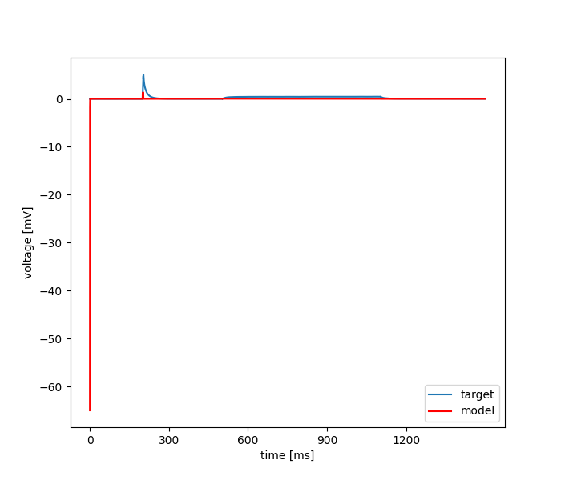

Sat Aug 20 20:44:46 2022
Optimization of morphology_131117-C2.hoc based on: /home/mohacsi/Desktop/optimizer/optimizer/new_test_files/ca1pc_anat/131117-C2_short.dat
Results
| Parameter Name | Minimum | Maximum | Optimum |
|---|---|---|---|
| cm | 1.0 | 10.0 | 10.0 |
| Ra | 30.0 | 3000.0 | 3000.0 |
| g_pas | 1e-05 | 0.01 | 0.0006584412998002867 |
Fitness: [nan]

seed = 1234
current_algorithm = {'CMAES - Cmaes': {'number_of_generations': 10, 'size_of_population': 10, 'number_of_cpu': 2, 'sigma': 2}}
num_params = 3
boundaries = [[1.0, 30.0, 1e-05], [10.0, 3000.0, 0.01]]
starting_points = None
algorithm_parameters = {'number_of_generations': 10, 'size_of_population': 10, 'number_of_cpu': 2, 'sigma': 2}
feats = MSE, Latency to 1st spike
weights = [0.5, 0.5]
user function =
def usr_fun(self,v):
#3
#cm
#Ra
#g_pas
for sec in h.allsec():
sec.cm=v[0]
sec.Ra=v[1]
for seg in sec:
seg.g_pas=v[2]
seg.e_pas=0